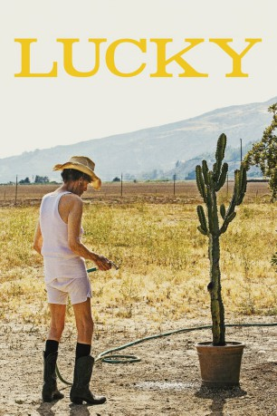
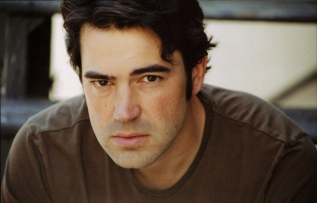

#9339 Lucky
 
 IMDB-Wertung: 7.4 / 10
IMDB-Wertung: 7.4 / 10  Tomatometer: 97
Tomatometer: 97  Metascore: 80
Metascore: 80 
Regiedebüt von Schauspieler John Carroll Lynch um die spirituelle Reise eines 90-jährigen Atheisten und über die seltsamen Bewohner seines Heimatortes im Nirgendwo. Der Mann findet sich vor dem Abgrund des Lebens wieder, der ihn in einen Trip der Selbstentdeckung stößt.
Jahr: 2017
Dauer: 88 Minuten
FSK: 0
Land: USA Studio: Eureka EntertainmentTonspuren: DTS - ,
Untertitel: Deutsch,
Auflösung: 1080p (1920x800) Größe: 3860 MB
Genre: Drama, Komödie
Regisseur: John Carroll Lynch
Drehbuch: Logan Sparks
Soundtrack: Elvis Kuehn
Darsteller:
 Harry Dean Stanton als Lucky
Harry Dean Stanton als Lucky David Lynch als Howard
David Lynch als Howard-  Ron Livingston als Bobby Lawrence
 Ed Begley Jr. als Dr. Christian Kneedler
Ed Begley Jr. als Dr. Christian Kneedler Tom Skerritt als Fred
Tom Skerritt als Fred Barry Shabaka Henley als Joe
Barry Shabaka Henley als Joe- James Darren als Paulie
 Beth Grant als Elaine
Beth Grant als Elaine- Yvonne Huff als Loretta
- Hugo Armstrong als Vincent
- Bertila Damas als Bibi
- Ulysses Olmedo als Juan Wayne
- Ana Mercedes als Victoria
- Amy Claire als Frances
- Johnny Glasser als Background (uncredited)
- Daniel R. Lawson als Patron (uncredited)
- Liberace als Himself (archive footage) (uncredited)
- Pam Sparks als Pam
- Mouse als Mouse
- Sarah Cook als Debbie
- Otti Feder als Otti
- Fiona als Fiona: Dog
- Dan Gruenberg als Laughing Barfly (uncredited)
- Mikey Kampmann als Hipster (uncredited)
- Bonnie Williams als Nancy (uncredited)
Datei: X:\2017(G-M)\Lucky (2017, FSK0, 1920x800).mkv seit 30.07.2018
Festplatte: HD 2017(A-Z)-2018(A-F)
 Es gibt insgesamt 148 Filme in der Gruppe '2017(G-M)'
Es gibt insgesamt 148 Filme in der Gruppe '2017(G-M)'